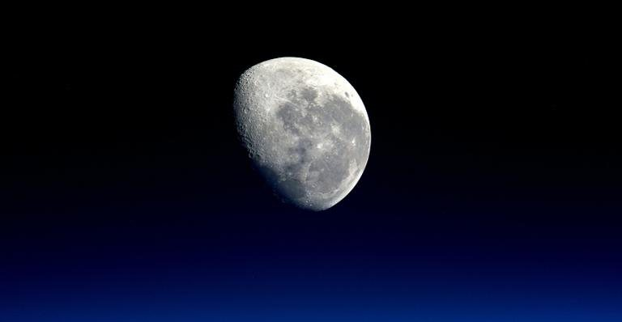

Lua Nova
Lua Nova: Nessa fase, a face iluminada da lua é aquela voltada integralmente para o Sol.
Por essa razão, dizemos que a lua nova é invisível aos observadores que estão na superfície terrestre.
Características
Nascer da Lua |
Pôr da Lua |
|---|---|
18 horas |
6 horas |
Características
Nascer da Lua |
Pôr da Lua |
|---|---|
12 h |
0:00 h |